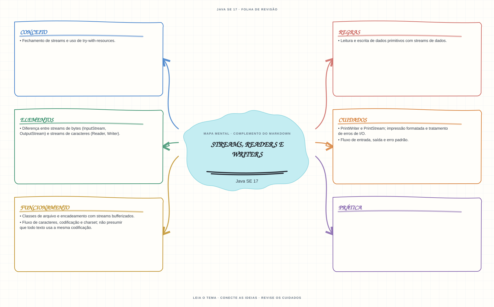

Ver mapa mental deste assuntoEscolher entre I/O de bytes e caracteres, definir charset e fechar recursos corretamente.
Aprofundamento e revisão 1Z0-829: use esta página depois dos fundamentos. Os tópicos de prova complementam a trilha inicial e não são pré-requisitos para começar a programar.
- Leia o objetivo e localize a ideia principal no conteúdo abaixo.
- Preveja o resultado, compile e execute o exemplo.
- Faça a atividade sem copiar a solução e confira a checagem comentada.
EXEMPLO DE CONSOLE
Veja a regra em execução
Antes de executar, anote sua previsão. Compile o exemplo com o JDK e compare a saída observada com as regras deste assunto.
Comandos para compilar e executar
javac -d target/bin src/09-io/streams-readers-e-writers/StreamsReadersEWritersExample.java
java -cp target/bin StreamsReadersEWritersExampleA execução imprime o resultado no console para você comparar com sua previsão.
Consultar código-fonte: StreamsReadersEWritersExample.java
import java.io.ByteArrayInputStream;
import java.io.ByteArrayOutputStream;
import java.io.BufferedReader;
import java.io.IOException;
import java.io.InputStreamReader;
import java.nio.charset.StandardCharsets;
public class StreamsReadersEWritersExample {
public static void main(String[] args) throws IOException {
System.out.println("=== I/O: streams de bytes e de caracteres ===");
String mensagem = "Java I/O: acao e informacao";
byte[] dados = mensagem.getBytes(StandardCharsets.UTF_8);
try (ByteArrayInputStream entrada = new ByteArrayInputStream(dados);
ByteArrayOutputStream saida = new ByteArrayOutputStream()) {
saida.write(entrada.readAllBytes());
String texto = saida.toString(StandardCharsets.UTF_8);
System.out.println("Streams de bytes copiam bytes; UTF-8 decodifica o texto: " + texto);
}
try (BufferedReader leitor = new BufferedReader(new InputStreamReader(
new ByteArrayInputStream(dados), StandardCharsets.UTF_8))) {
System.out.println("Reader le caracteres linha a linha: " + leitor.readLine());
}
}
}
PRATIQUE AGORA
Faça uma pequena alteração por conta própria
Leia um arquivo de texto com charset explícito e feche o leitor automaticamente.
Concluído quando: o programa compilar, produzir o resultado esperado e você conseguir explicar a regra aplicada.
CHECAGEM RÁPIDA · Streams, readers e writers
Para copiar uma imagem, deve-se decodificar os dados com Reader?
Conferir resposta comentada
Não. Uma imagem é dado binário: use streams de bytes. Reader e Writer são abstrações para caracteres e codificação.
Estude
- Diferença entre streams de bytes (
InputStream,OutputStream) e streams de caracteres (Reader,Writer). - Classes de arquivo e encadeamento com streams bufferizados.
- Leitura e escrita de dados primitivos com streams de dados.
- Fluxo de caracteres, codificação e charset; não presumir que todo texto usa a mesma codificação.
PrintWriterePrintStream; impressão formatada e tratamento de erros de I/O.- Fechamento de streams e uso de try-with-resources.
- Fluxo de entrada, saída e erro padrão.
Prática
Copie um arquivo em bytes e leia um arquivo de texto com charset explícito. Trate e feche os recursos corretamente.
Como este capítulo se relaciona com cada exame
Fundamentos reaproveitáveis; valide APIs e objetivos específicos de Java 8.
Base de estudo deste portal; confirme o mapeamento com o blueprint vigente.
Conceitos úteis; confira APIs e requisitos atualizados de Java 21.
Orientação editorial sobre reaproveitamento do material; não representa objetivos oficiais nem garante cobertura do exame. Consulte o comparativo e as fontes da Oracle.